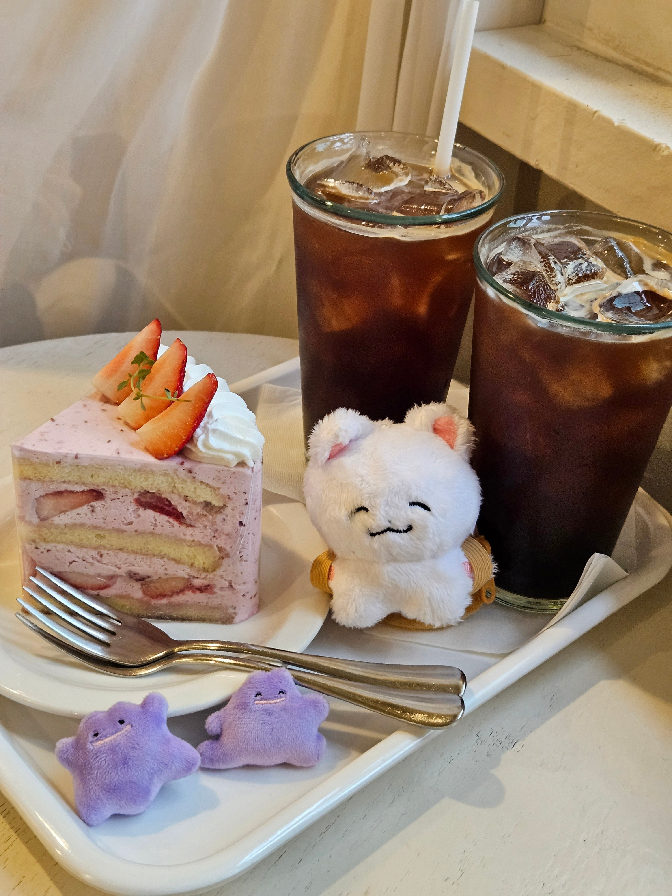
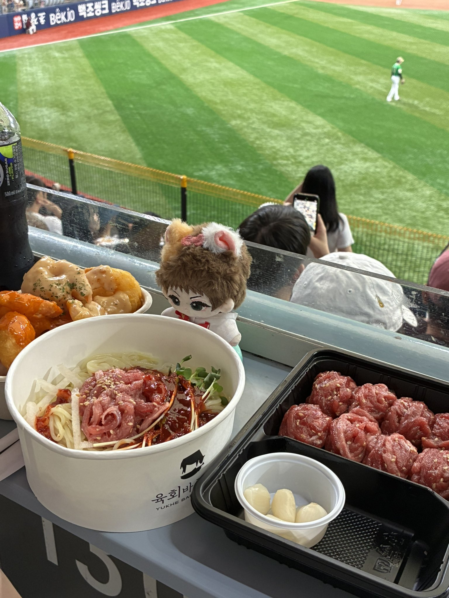
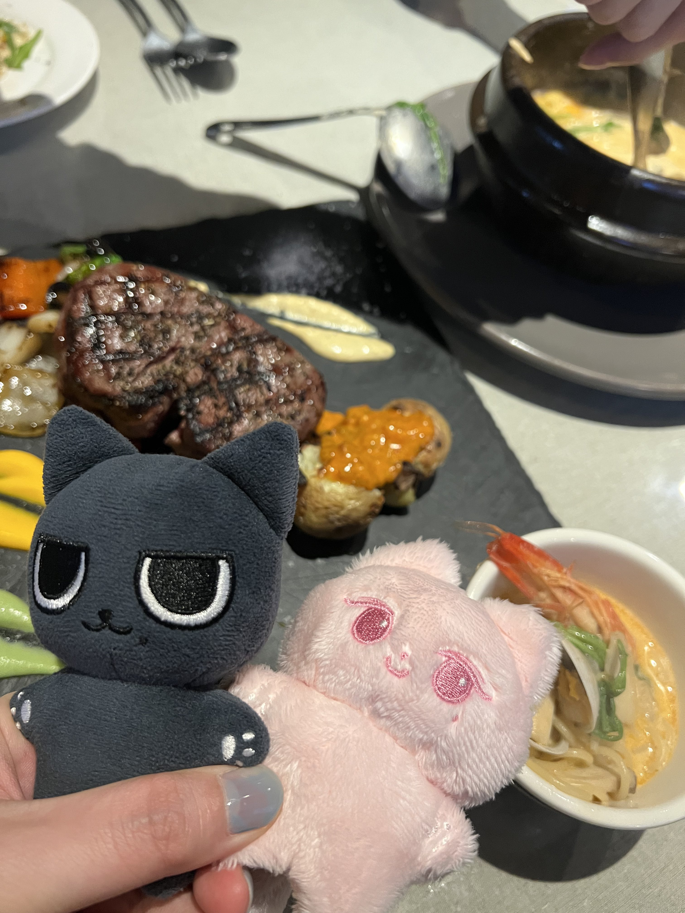
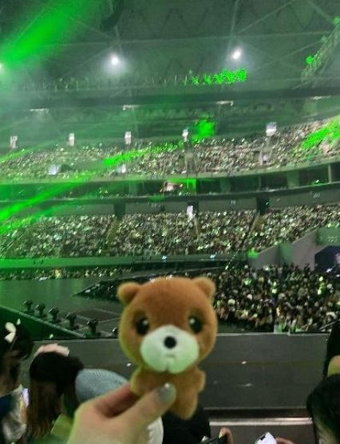
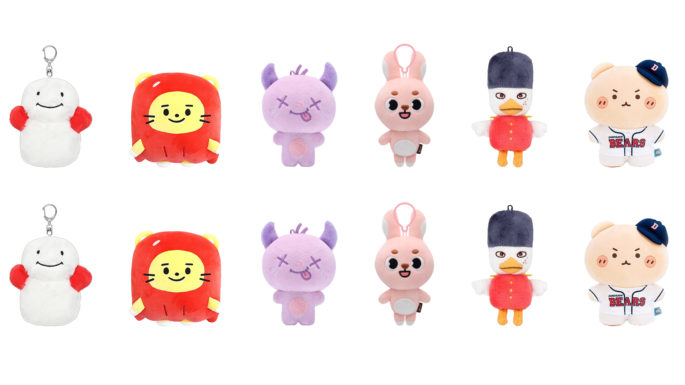
바로 팬덤 문화의 새로운 핵심, 캐릭터 인형입니다. 예전에는 인형이 어린아이들의 장난감이었다면, 이제는 많은 팬들이 자신의 '최애'를 상징하는 굿즈로 소유하고 있습니다.
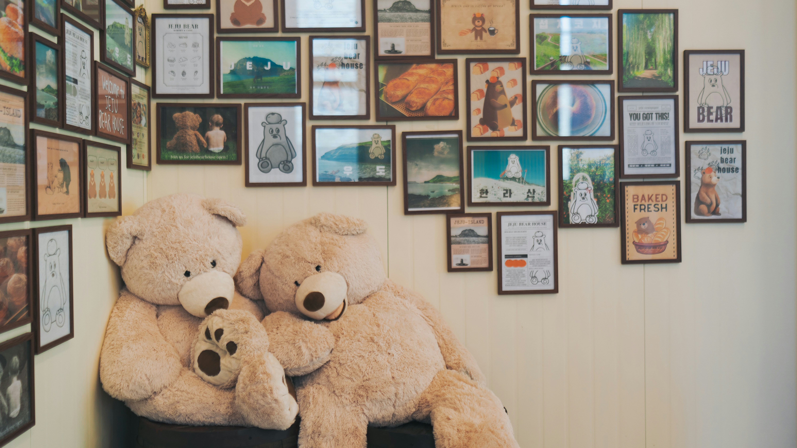
최근 키덜트 트렌드로 어른들도 인형을 소유하는 것이 일반화되면서, 10cm 내외의 작은 인형들이 인기를 얻고 있습니다. 이들은 휴대성이 극대화되어 어디든 함께할 수 있어, 일상에 소소한 행복을 더하는 것이 유행입니다.
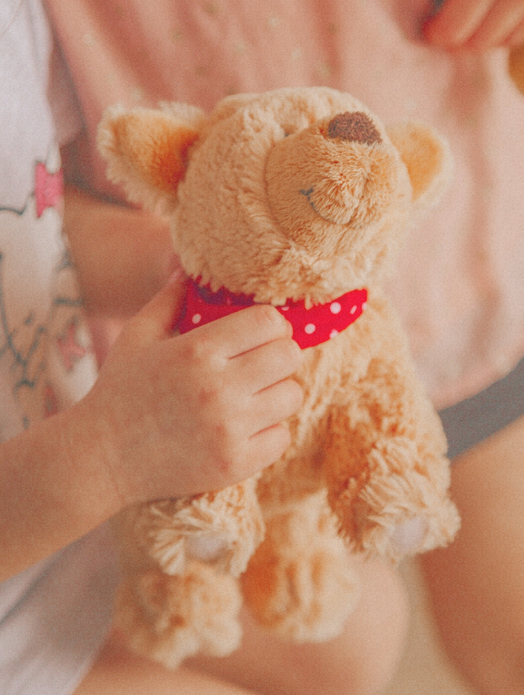
또한 갖고 싶던 인형을 손에 넣을 때 사람들은 기쁨을 느낍니다. 또한 인형으로 소지품을 꾸미는 과정에서 자신의 취향을 반영하고 개성을 드러내며, 만족감을 얻습니다.
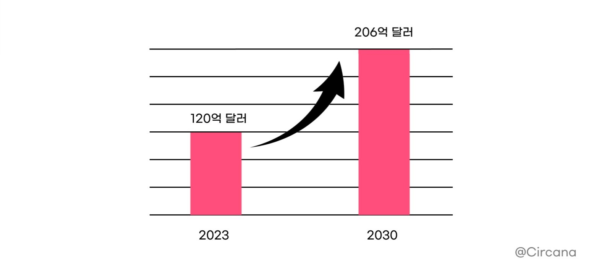
2023년 기준 120억 달러 규모였던 글로벌 봉제 인형 시장 규모는 2030년까지 연평균 8% 성장할 전망입니다.
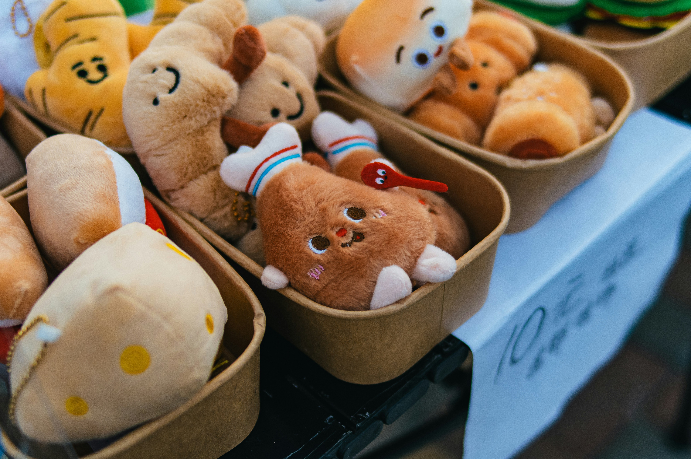
인형 디자인에는 '모에화' 전략이 숨어 있습니다. 특징을 과장해 귀엽게 표현하면, 팬들은 인형을 최애의 분신으로 느낍니다. 이를 통해 팬들은 심리적으로 최애와 가까워진 기분을 얻으며, 정서적 유대감을 만듭니다.
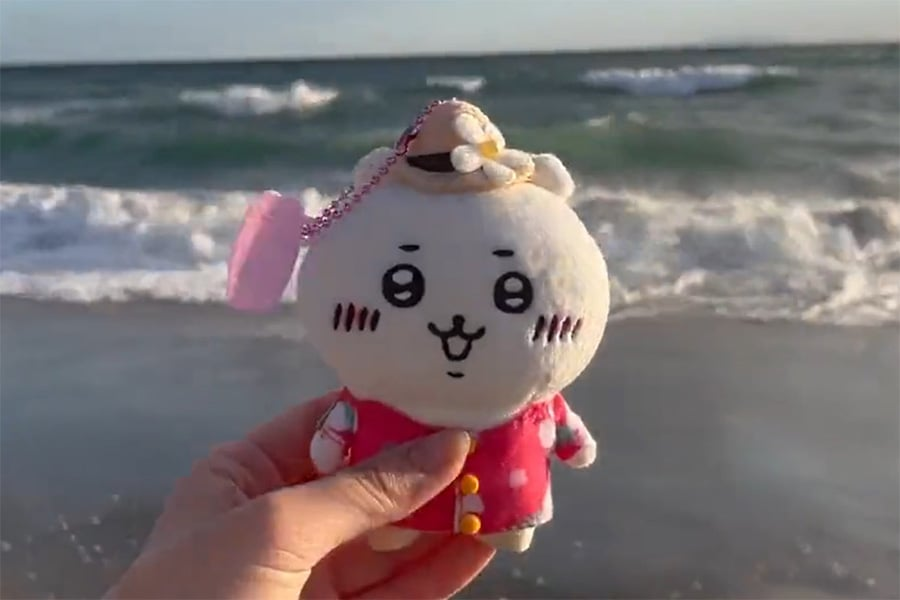
팬들은 인형에 옷을 입혀주고, 여행지에서 함께 사진을 찍어 SNS에 공유합니다. 이렇게 일상을 기록하는 과정에서 인형은 단순한 상품을 넘어 팬들의 애정이 담긴 능동적인 문화 활동으로 변모하고 있습니다.
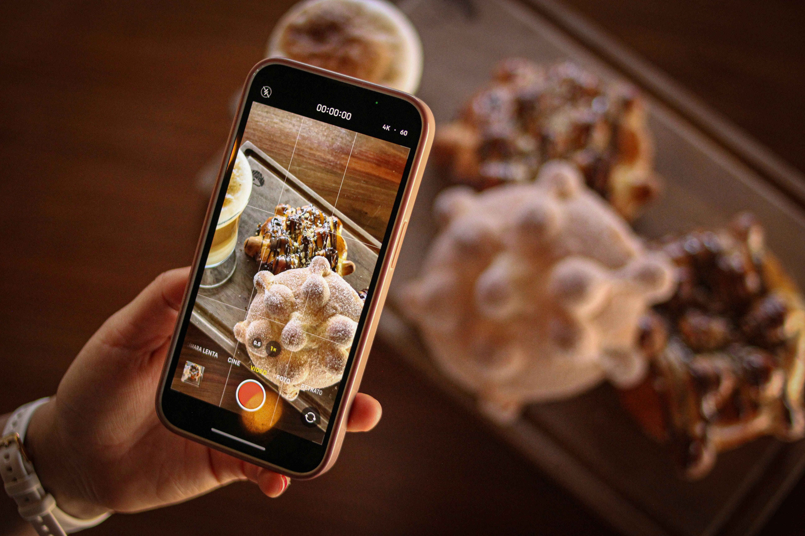
인형은 사람들에게 소유의 기쁨을 주고, 일상을 특별하게 만들며, 사진 촬영과 SNS 공유 같은 능동적 활동을 이끌어냅니다. 이처럼 인형은 사람들에게 만족감을 안겨주는 중요한 도구로 진화 했습니다.